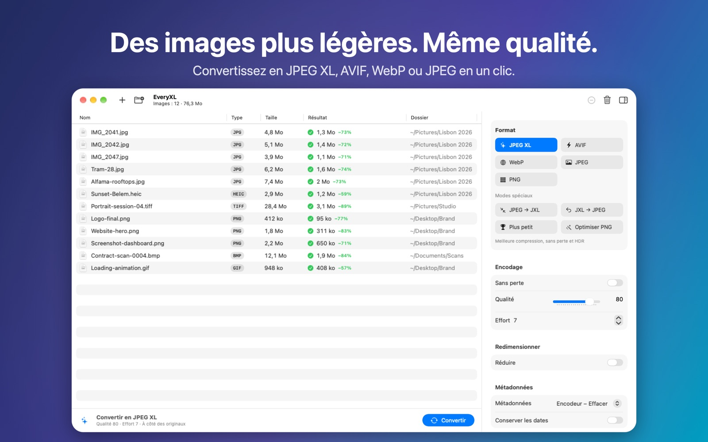

Des images plus légères. Même qualité.
Allégez vos photos et graphismes grâce aux formats modernes. Convertissez des dossiers entiers en JPEG XL, AVIF, WebP ou JPEGLI en parallèle : rapide, privé, hors ligne.
Bientôt sur le Mac App StoreNécessite macOS 14 ou ultérieur · Apple silicon et Intel

Fonctionnalités
Formats modernes
JPEG XL, AVIF, WebP, JPEGLI et PNG : des fichiers plus légers à qualité visuelle égale.
JPEG → JXL sans perte
Des JPEG environ 20 % plus légers, avec l’original restaurable bit à bit.
Par lots et en parallèle
Déposez des dossiers entiers. EveryXL exploite tous les cœurs de votre Mac.
Taille et métadonnées
Six modes de redimensionnement, contrôle EXIF/XMP/GPS et dates conservées.
Privé
Tout se passe sur votre Mac. Pas de compte, pas d’envoi, pas de suivi.
Natif
Conçu pour macOS en SwiftUI, en six langues.